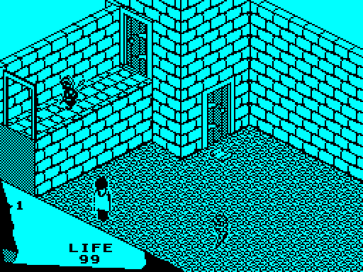
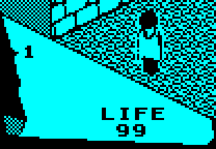
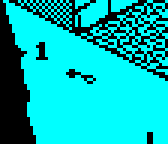
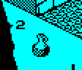
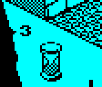
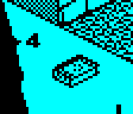
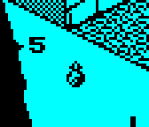
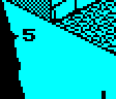
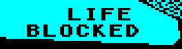
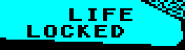

| The panel |
Fairlight has no panel apart from the room: the room fills the screen, and the few things the player needs are in its bottom left-hand corner, in front of the floor's edge -- drawn by the room itself, in part 17, which 78 rooms draw: a solid fill beyond the edge and a fine chequer below it, with the rest of the room's lines, and coloured with it. On it the game prints LIFE (its label once, by ROOMST as the room is entered, and the two digits by the main loop whenever LIFE changes, MAIN_LOOP), the number of the carried place in use, 1 to 5, and a box 24 by 32 with the thing in that place. The five things carried are not shown together: only the one chosen with keys 1 to 5 is in the box. Here is a game at its third pass in the first room (room 29), read from the screen of the game run in SkoolKit's simulator:


CLEAR_THING_BOX (the author's INFO0) puts the box back as the clean copy of the room has it and prints the place's digit at x 10, y 50; SHOW_THING_IN_USE (INFOR) then draws the thing's sprite in it, the image only, with no mask, over the box. Staged here by the game's own routines: five things made by PLACE_OBJECT in spare records and put in the five places, each place chosen (SELECTED) and shown by SHOW_THING_IN_USE, and then an empty place cleared by CLEAR_THING_BOX alone. The sprite is drawn from the box's corner, so a thing smaller than the box sits at its bottom left, and one wider would spill out.
 place 1: a key |  place 2: a round flask |  place 3: an hourglass |  place 4: a book |  place 5: a small bottle |  place 5, empty |
SHOW_MESSAGE prints a message over LIFE's digits for ten passes and then nine spaces, after which the main loop prints LIFE again: BLOCKED when the knight's way or a drop is blocked, LOCKED at a door he has not the key for, TOO HEAVY when what he would pick up would make his load 8 or more. Each drawn by the game's routine with the message number put where the game puts it; and LIFE printed by the main loop's own lines (START_PASS, in MAIN_LOOP) with LIFE at 42:
 message 1 |  message 2 | message 3 | LIFE at 42 |
Every character is printed by PRINT, which draws it as an 8 by 8 picture through the sprite compositor (COMPOSITE_TO_SCREEN) at any pixel, not in character cells, and in the room's colours: nothing on the screen has colours of its own, since the whole screen is coloured with one attribute (ATTRI). See the font.